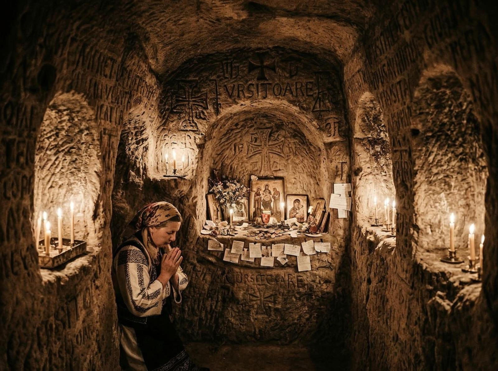
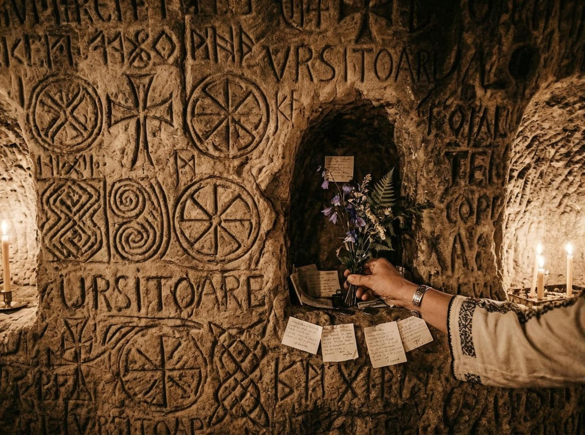

Coordonate: 45° 38′ 54″ N 25° 33′ 46″ E. Ți-am notat mental. E locul pe care-l-am căutat pe hartă înainte de a pleca de acasă. O căutare online m-a dus la "Mănăstirea rupestră de la Șinca Veche", dar realitatea e mai complexă. Nu e doar o mănăstire. E un ansamblu de biserică, turn, chilii, totul săpatat în stâncă, într-o groată de munte care pare să fi fost făcută pentru ea.
Șinca Veche e în Țara Făgărașului, la 22 km de Brașov. Nu e greu de găsit dacă știi ce cauți. Dar dacă nu știi, o vei rata. E ascuns. Nu e pe drumul principal. E pe o potecă îngustă care urcă spre munte, și de acolo începe să se dezvăluie.
Prima dată istorică e din jurul anului 1700. Persecuția creștinilor ortodocși în Transilvania a fost brutală. Mulți au murit. Alții s-au ascuns în munți, au găsit grote și au început să facă ceva acolo. Au săpat în piatră. Au săpat în stâncă. Au creat locuri unde să se roagească.

Interesant e că Șinca Veche nu e doar un loc de refugiu. E un loc de creație. Bisericile au picturi, sculpturi, detalii arhitecturale care spun povestea credințelor lor. Și totul a fost făcut de oameni care aveau de suferit, dar care au ales să creeze ceva frumos.
Puțini știu că — și asta e parte din fascinație — Șinca Veche e cunoscută și ca "Templul Ursitelor". Se spune că dacă te rogi la ceva acolo, se împlinște. E o legendă, desigur. Dar când vezi mii de oameni care vin anual să se roage, începi să te întrebi dacă nu e ceva mai mult decât legendă.
Există și alte elemente care fac locul special. Grota de la Șinca Veche a fost locuită încă din secolul XVIII. Nu doar de călugări. De oameni care căutau liniște, care căutau protecție, care căutau ceva ce nu găseau în lumea exterioară.

Și totuși există. E acolo, în muntele Făgărașului, ascuns, aproape uitat. Oamenii vin, se roagă, pleacă. Se întorc. Se roagă din nou. E un ciclu care continuă de secole.
Problemă e că nu e ușor să ajungi. Drumul e îngust, dar parcă face parte din experiența. Când ajungi, nu mai ești același. Când pleci, nu mai ești același. Șinca Veche te schimbă. Te liniștește te. Te conectează cu ceva mai vechi, mai profund.
Nu romantizez asta. Nu e doar o plăcere. E o responsabilitate. Următoarele noastre nu au avut șansa să aleagă unde să fugă. Au găsit Șinca Veche. Au creat ceva acolo. Noi avem datoria să păstrăm.
România are adâncimi pe care puțini le explorează — arhive, documente, povești uitate. Locuri care au supraviețuit prigoane, care au creat artă în mijlocul suferinței, care au continuat să creadă. Șinca Veche e una din ele.
Probabil că nu putem reveni la același nivel. Dar putem învăța. Putem învăța că trecutul nu e doar în cărți. E în locuri. E în povești. E în oameni. Și că, uneori, cele mai importante lucruri sunt cele pe care le-am uitat.
Șinca Veche e o amintire. O amintire a ceea ce am fost, ceea ce am creat, ceea ce am supraviețuit. Și o amintire a ceea ce putem fi, dacă învățăm din trecut.